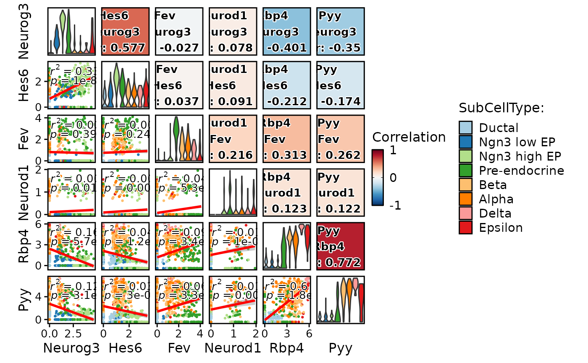
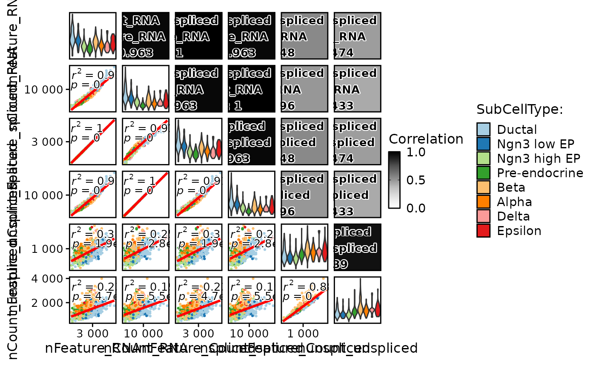
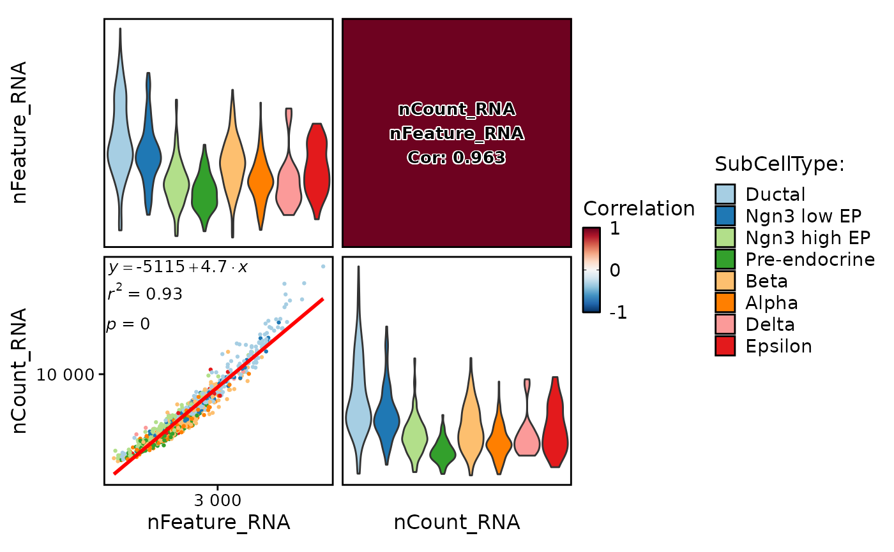

Features correlation plot This function creates a correlation plot to visualize the pairwise correlations between selected features in a Seurat object.
Source:R/SCP-plot.R
FeatureCorPlot.RdFeatures correlation plot This function creates a correlation plot to visualize the pairwise correlations between selected features in a Seurat object.
Usage
FeatureCorPlot(
srt,
features,
group.by = NULL,
split.by = NULL,
cells = NULL,
slot = "data",
assay = NULL,
cor_method = "pearson",
adjust = 1,
margin = 1,
reverse = FALSE,
add_equation = FALSE,
add_r2 = TRUE,
add_pvalue = TRUE,
add_smooth = TRUE,
palette = "Paired",
palcolor = NULL,
cor_palette = "RdBu",
cor_palcolor = NULL,
cor_range = c(-1, 1),
pt.size = NULL,
pt.alpha = 1,
cells.highlight = NULL,
cols.highlight = "black",
sizes.highlight = 1,
alpha.highlight = 1,
stroke.highlight = 0.5,
calculate_coexp = FALSE,
raster = NULL,
raster.dpi = c(512, 512),
aspect.ratio = 1,
title = NULL,
subtitle = NULL,
legend.position = "right",
legend.direction = "vertical",
theme_use = "theme_scp",
theme_args = list(),
combine = TRUE,
nrow = NULL,
ncol = NULL,
byrow = TRUE,
force = FALSE,
seed = 11
)Arguments
- srt
A Seurat object.
- features
A character vector specifying the features to compare. Should be present in both the assay data and the metadata of the Seurat object.
- group.by
A character string specifying the column in the metadata to group cells by.
- split.by
A character string specifying the column in the metadata to split the plot by.
- cells
A character vector specifying the cells to include in the plot. If NULL (default), all cells will be included.
- slot
A character string specifying the slot in the Seurat object to use. Defaults to "data".
- assay
A character string specifying the assay to use. Defaults to the default assay in the Seurat object.
- cor_method
A character string specifying the correlation method to use. Can be "pearson" (default) or "spearman".
- adjust
A numeric value specifying the adjustment factor for the width of the violin plots. Defaults to 1.
- margin
A numeric value specifying the margin size for the plot. Defaults to 1.
- reverse
A logical value indicating whether to reverse the order of the features in the plot. Defaults to FALSE.
- add_equation
A logical value indicating whether to add the equation of the linear regression line to each scatter plot. Defaults to FALSE.
- add_r2
A logical value indicating whether to add the R-squared value of the linear regression line to each scatter plot. Defaults to TRUE.
- add_pvalue
A logical value indicating whether to add the p-value of the linear regression line to each scatter plot. Defaults to TRUE.
- add_smooth
A logical value indicating whether to add a smoothed line to each scatter plot. Defaults to TRUE.
- palette
A character string specifying the name of the color palette to use for the groups. Defaults to "Paired".
- palcolor
A character string specifying the color for the groups. Defaults to NULL.
- cor_palette
A character string specifying the name of the color palette to use for the correlation. Defaults to "RuBu".
- cor_palcolor
A character string specifying the color for the correlation. Defaults to "RuBu".
- cor_range
A two-length numeric vector specifying the range for the correlation.
- pt.size
A numeric value specifying the size of the points in the scatter plots. If NULL (default), the size will be automatically determined based on the number of cells.
- pt.alpha
A numeric value between 0 and 1 specifying the transparency of the points in the scatter plots. Defaults to 1.
- cells.highlight
A logical value or a character vector specifying the cells to highlight in the scatter plots. If TRUE, all cells will be highlighted. Defaults to NULL.
- cols.highlight
A character string specifying the color for the highlighted cells. Defaults to "black".
- sizes.highlight
A numeric value specifying the size of the highlighted cells in the scatter plots. Defaults to 1.
- alpha.highlight
A numeric value between 0 and 1 specifying the transparency of the highlighted cells in the scatter plots. Defaults to 1.
- stroke.highlight
A numeric value specifying the stroke size of the highlighted cells in the scatter plots. Defaults to 0.5.
- calculate_coexp
A logical value indicating whether to calculate the co-expression of selected features. Defaults to FALSE.
- raster
A logical value indicating whether to use raster graphics for scatter plots. Defaults to NULL.
- raster.dpi
A numeric vector specifying the dpi (dots per inch) resolution for raster graphics in the scatter plots. Defaults to c(512, 512).
- aspect.ratio
A numeric value specifying the aspect ratio of the scatter plots. Defaults to 1.
- title
A character string specifying the title for the correlation plot. Defaults to NULL.
- subtitle
A character string specifying the subtitle for the correlation plot. Defaults to NULL.
- legend.position
A character string specifying the position of the legend. Can be "right" (default), "left", "top", or "bottom".
- legend.direction
A character string specifying the direction of the legend. Can be "vertical" (default) or "horizontal".
- theme_use
A character string specifying the name of the theme to use for the plot. Defaults to "theme_scp".
- theme_args
A list of arguments to pass to the theme function. Defaults to an empty list.
- combine
A logical value indicating whether to combine the plots into a single plot. Defaults to TRUE.
- nrow
A numeric value specifying the number of rows in the combined plot. If NULL (default), the number of rows will be automatically determined.
- ncol
A numeric value specifying the number of columns in the combined plot. If NULL (default), the number of columns will be automatically determined.
- byrow
A logical value indicating whether to fill the combined plot byrow (top to bottom, left to right). Defaults to TRUE.
- force
A logical value indicating whether to force the creation of the plot, even if it contains more than 50 subplots. Defaults to FALSE.
- seed
A numeric value specifying the random seed for reproducibility. Defaults to 11.
Examples
data("pancreas_sub")
pancreas_sub <- Seurat::NormalizeData(pancreas_sub)
FeatureCorPlot(pancreas_sub, features = c("Neurog3", "Hes6", "Fev", "Neurod1", "Rbp4", "Pyy"), group.by = "SubCellType")

FeatureCorPlot(pancreas_sub,
features = c("nFeature_RNA", "nCount_RNA", "nFeature_spliced", "nCount_spliced", "nFeature_unspliced", "nCount_unspliced"),
group.by = "SubCellType", cor_palette = "Greys", cor_range = c(0, 1)
)
#> Warning: essentially perfect fit: summary may be unreliable
#> Warning: essentially perfect fit: summary may be unreliable
#> Warning: essentially perfect fit: summary may be unreliable
#> Warning: essentially perfect fit: summary may be unreliable

FeatureCorPlot(pancreas_sub,
features = c("nFeature_RNA", "nCount_RNA"),
group.by = "SubCellType", add_equation = TRUE
)
